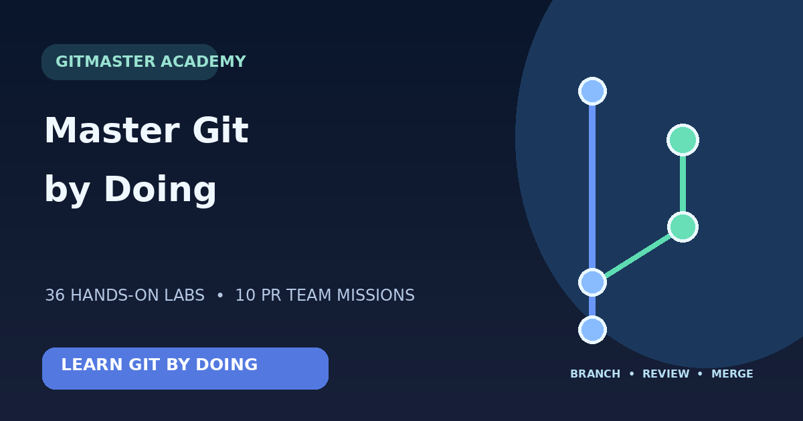

Build solid fundamentals
Explore installation, file editing, diff, staging, commits, branching, merging and recovery in 36 labs.
Type real Git commands in an interactive learning environment, understand branch history visually, and practice pull requests, reviews, approvals and merges.
36 Git labs · 10 PR teamwork missions · PDF textbook
Explore installation, file editing, diff, staging, commits, branching, merging and recovery in 36 labs.
Learn Draft and Ready PRs, review requests, feedback, approval, CI checks and merges across 10 guided missions.
Use in-terminal explanations and linked PDF pages to understand commands and flags.